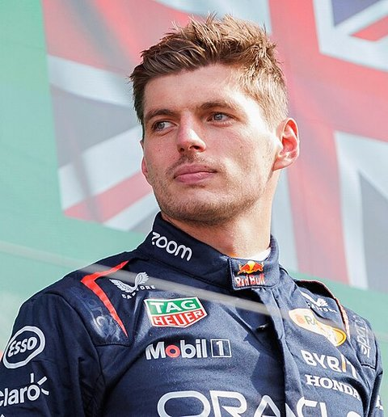
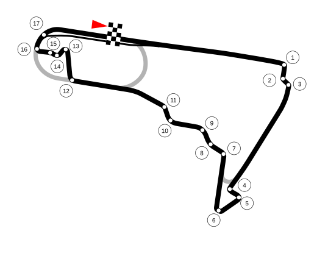
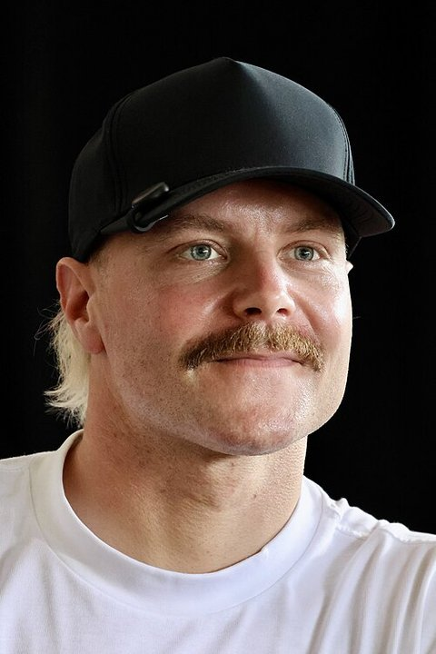
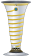
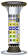

Autódromo Hermanos Rodríguez
Autódromo Hermanos Rodríguez
Todavía no se ha disputado esta carrera. Vuelve tras el fin de semana de carrera para ver tiempos por vuelta y diferencias.This race hasn't happened yet - check back after the race weekend for lap times and gap charts.Cette course n'a pas encore eu lieu. Revenez après le week-end de course pour voir les temps au tour et les écarts.
Sobre el Gran PremioAbout the Grand PrixÀ propos du Grand Prix
Sedes de este Gran PremioThis Grand Prix's venuesSites de ce Grand Prix
| CircuitoCircuitCircuit | AñosYearsAnnées |
|---|---|
| Autódromo Hermanos Rodríguez | 1963-1970, 1986-1992, 2015-2025 |
Piloto con más victorias en el GPDriver with most GP winsPilote avec le plus de victoires au GP

FotoPhotoPhoto: Steffen Prößdorf (CC BY-SA 4.0)Escudería con más victorias en el GPConstructor with most GP winsÉcurie avec le plus de victoires au GP

Sobre el circuitoAbout the circuitÀ propos du circuit
El circuitoThe circuitLe circuit

FotoPhotoPhoto: Pitlane02 (CC BY-SA 3.0)Récord de vueltaLap recordRecord du tour

FotoPhotoPhoto: Yu Chu Chin (CC BY-SA 4.0)RondaRoundManche 19 · Gran Premio de MéxicoMexican Grand PrixGrand Prix du Mexique · 2026-11-01
Parrilla vigente esta temporada:Current-season lineup:Grille actuelle de la saison :
 McLaren — MercedesNOR: Lando Norris (1)
McLaren — MercedesNOR: Lando Norris (1) PIA: Oscar Piastri (81)
PIA: Oscar Piastri (81) Mercedes AMG
Mercedes AMG ANT: Andrea Kimi Antonelli (12)RUS: George Russell (63)
ANT: Andrea Kimi Antonelli (12)RUS: George Russell (63) Red Bull Racing — Red Bull Ford
Red Bull Racing — Red Bull Ford VER: Max Verstappen (3)
VER: Max Verstappen (3) HAD: Isack Hadjar (6)Scuderia Ferrari
HAD: Isack Hadjar (6)Scuderia Ferrari LEC: Charles Leclerc (16)HAM: Lewis Hamilton (44)Williams — Mercedes
LEC: Charles Leclerc (16)HAM: Lewis Hamilton (44)Williams — Mercedes ALB: Alexander Albon (23)
ALB: Alexander Albon (23) SAI: Carlos Sainz (55)Racing Bulls — Red Bull FordLIN: Arvid Lindblad (41)
SAI: Carlos Sainz (55)Racing Bulls — Red Bull FordLIN: Arvid Lindblad (41) LAW: Liam Lawson (30)Aston Martin — HondaALO: Fernando Alonso (14)
LAW: Liam Lawson (30)Aston Martin — HondaALO: Fernando Alonso (14) STR: Lance Stroll (18)
STR: Lance Stroll (18) Haas — FerrariOCO: Esteban Ocon (31)BEA: Oliver Bearman (87)Audi F1 TeamHUL: Nico Hülkenberg (27)
Haas — FerrariOCO: Esteban Ocon (31)BEA: Oliver Bearman (87)Audi F1 TeamHUL: Nico Hülkenberg (27) BOR: Gabriel Bortoleto (5)Alpine — MercedesGAS: Pierre Gasly (10)
BOR: Gabriel Bortoleto (5)Alpine — MercedesGAS: Pierre Gasly (10) COL: Franco Colapinto (43)Cadillac — FerrariPER: Sergio Pérez (11)
COL: Franco Colapinto (43)Cadillac — FerrariPER: Sergio Pérez (11) BOT: Valtteri Bottas (77)
BOT: Valtteri Bottas (77)Clasificación actualCurrent standingsClassement actuel
| # | PilotoDriverPilote | PuntosPointsPoints |
|---|---|---|
| 1 | Andrea Kimi Antonelli | 365 |
| 2 | George Russell | 242 |
| 3 | Lewis Hamilton (7  ) | 241 |
| 4 | Max Verstappen (4) | 236 |
| 5 | Charles Leclerc | 233 |
| 6 | Lando Norris (1) | 211 |
| 7 | Oscar Piastri | 144 |
| 8 | Isack Hadjar | 105 |
| 9 | Liam Lawson | 77 |
| 10 | Pierre Gasly | 42 |
| 11 | Arvid Lindblad | 38 |
| 12 | Franco Colapinto | 27 |
| 13 | Oliver Bearman | 23 |
| 14 | Nico Hülkenberg | 13 |
| 15 | Gabriel Bortoleto | 10 |
| 16 | Esteban Ocon | 7 |
| 17 | Fernando Alonso (2) | 7 |
| 18 | Carlos Sainz | 7 |
| 19 | Alexander Albon | 5 |
| 20 | Yuki Tsunoda | 1 |
| 21 | Lance Stroll | 0 |
| 22 | Valtteri Bottas | 0 |
| 23 | Sergio Pérez | 0 |
| # | ConstructorConstructorÉcurie | PuntosPointsPoints |
|---|---|---|
| 1 | Mercedes AMG (8  ) | 607 |
| 2 | Scuderia Ferrari (16) | 474 |
| 3 | Red Bull Racing (6) | 355 |
| 4 | McLaren (10) | 355 |
| 5 | Racing Bulls | 102 |
| 6 | Alpine | 69 |
| 7 | Haas | 30 |
| 8 | Audi F1 Team | 23 |
| 9 | Williams (9) | 12 |
| 10 | Aston Martin | 7 |
| 11 | Cadillac | 0 |
Combinaciones del campeonatoChampionship permutationsCombinaisons du championnat
Campeonato de pilotosDrivers' ChampionshipChampionnat des pilotes
Antonelli aventaja a Russell en 123 puntos. Tras esta carrera quedarán 100 puntos en juego, así que el título se decide en ella si la ventaja sobre cada rival sigue siendo igual o mayor de 100 puntos:Antonelli leads Russell by 123 points. After this race 100 points will still be up for grabs, so the title is decided in it if the lead over every rival is still equal to or greater than 100 points:Antonelli devance Russell de 123 points. Après cette course il restera 100 points en jeu : le titre se joue donc si l'avance sur chaque rival reste égale ou supérieure à 100 points :
| Si Antonelli acaba…If Antonelli finishes…Si Antonelli termine… | ResultadoResultRésultat |
|---|---|
| del 1.º al 9.º1st to 9thde la 1re à la 9e place | Es campeón, pase lo que pase con los demásChampion, whatever the others doChampion, quoi que fassent les autres |
| 10.º10th10e | Es campeón, salvo que gane RussellChampion, unless Russell winsChampion, sauf si Russell gagne |
| 11.º o peor, o no termina11th or lower, or does not finish11e ou plus bas, ou ne termine pas | Es campeón, salvo que gane Russell o HamiltonChampion, unless Russell or Hamilton winsChampion, sauf si Russell ou Hamilton gagne |
Campeonato de constructoresConstructors' ChampionshipChampionnat des constructeurs
Mercedes aventaja a Ferrari en 133 puntos y tras esta carrera quedarán 172 puntos en juego.Mercedes leads Ferrari by 133 points and 172 points will still be available after this race.Mercedes devance Ferrari de 133 points et il restera 172 points en jeu après cette course.
| Si Mercedes suma…If Mercedes scores…Si Mercedes marque… | ResultadoResultRésultat |
|---|---|
| 43 puntos (un 1-2)43 points (a 1-2 finish)43 points (un 1-2) | Es campeón, salvo que Ferrari sume 4 puntos o másChampion, unless Ferrari scores 4 points or moreChampion, sauf si Ferrari marque 4 points ou plus |
| 40 puntos (un 1-3)40 points (a 1-3 finish)40 points (un 1-3) | Es campeón, salvo que Ferrari sume algún puntoChampion, unless Ferrari scores any pointChampion, sauf si Ferrari marque au moins un point |
| Menos de 40 puntosFewer than 40 pointsMoins de 40 points | Todavía no es campeón, haga lo que haga FerrariNot champion yet, whatever Ferrari doesPas encore champion, quoi que fasse Ferrari |
Se cuenta el máximo de puntos que queda en el resto de rondas y los puntos de un Gran Premio (25-18-15-12-10-8-6-4-2-1). Un empate a puntos se resuelve por victorias de Gran Premio, y aquí lo gana Antonelli: lleva 9 y Russell no pasaría de 8 ni ganando todo lo que queda. En constructores un empate no cuenta como decidido.This uses the most points still available in the remaining rounds and the points of a Grand Prix (25-18-15-12-10-8-6-4-2-1). A tie on points is settled on Grand Prix wins, and here Antonelli would win it: with 9 wins so far, whereas Russell could not get past 8 even by winning everything left. In the constructors' championship a tie does not count as decided.On compte le maximum de points encore disponibles dans les manches restantes et les points d'un Grand Prix (25-18-15-12-10-8-6-4-2-1). Une égalité de points se règle aux victoires en Grand Prix, et ici Antonelli l'emporterait : il en a 9 et Russell ne dépasserait pas 8 même en gagnant tout ce qui reste. Chez les constructeurs, une égalité n'est pas comptée comme décidée.
Previa de la carreraRace build-upAvant-course
Las últimas ediciones de este Gran Premio en el sitio.The latest editions of this Grand Prix on the site.Les dernières éditions de ce Grand Prix sur le site.
Más victorias aquí en estas ediciones: Max Verstappen (5), Lewis Hamilton (2).Most wins here in these editions: Max Verstappen (5), Lewis Hamilton (2).Le plus de victoires ici sur ces éditions : Max Verstappen (5), Lewis Hamilton (2).
4 de 9 ganadores salieron desde el puesto 1 de la parrilla.4 of 9 winners started from the front of the grid.4 vainqueurs sur 9 sont partis de la première place de la grille.
Hubo Safety Car o Virtual Safety Car en 9 de 9 ediciones (100 %).There was a Safety Car or Virtual Safety Car in 9 of 9 editions (100%).Il y a eu une Safety Car ou une Virtual Safety Car dans 9 éditions sur 9 (100 %).
| AñoYearAnnée | GanadorWinnerVainqueur | MargenMarginÉcart | Salida del ganadorWinner's grid slotDépart du vainqueur | NeutralizacionesNeutralisationsNeutralisations | Paradas del ganadorWinner's stopsArrêts du vainqueur | AbandonosRetirementsAbandons | Mejor vueltaFastest lapMeilleur tour |
|---|---|---|---|---|---|---|---|
| 2025 | Lando Norris | +30.324 s | 1 | VSC | 1 | 4 | RUS 1:20.052 |
| 2024 | Carlos Sainz Jr. | +4.705 s | 1 | SC | 1 | 3 | LEC 1:18.336 |
| 2023 | Max Verstappen | +13.875 s | 3 | SC, VSC, Bandera rojaRed flagDrapeau rouge | 3 | 5 | HAM 1:21.334 |
| 2022 | Max Verstappen | +15.186 s | 1 | VSC | 1 | 2 | RUS 1:20.153 |
| 2021 | Max Verstappen | +16.555 s | 3 | SC | 1 | 2 | BOT 1:17.774 |
| 2019 | Lewis Hamilton | +1.766 s | 3 | VSC | 1 | 2 | LEC 1:19.232 |
| 2018 | Max Verstappen | +17.316 s | 2 | VSC | 2 | 4 | BOT 1:18.741 |
| 2017 | Max Verstappen | +19.678 s | 2 | VSC | 1 | 5 | VET 1:18.785 |
| 2016 | Lewis Hamilton | +8.354 s | 1 | SC | 1 | 1 | RIC 1:21.134 |